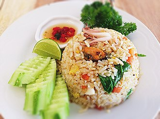

FOOD GALLERY
Chiken Biriyani

Biryani (/bɪrˈjɑːni/) is a mixed rice dish originating among the Muslims of the Indian subcontinent.[1][2][3][4][5] It is made with spices, rice, and meat .
Chiken Fried Rice

Fried rice is a dish of cooked rice that has been stir-fried in a wok or a frying pan and is usually mixed with other ingredients such as eggs.
Clash of Rolls
Shawarma is a popular Levantine Arab dish consisting of meat cut into thin slices, stacked in a cone-like shape, and roasted on a slowly-turning .